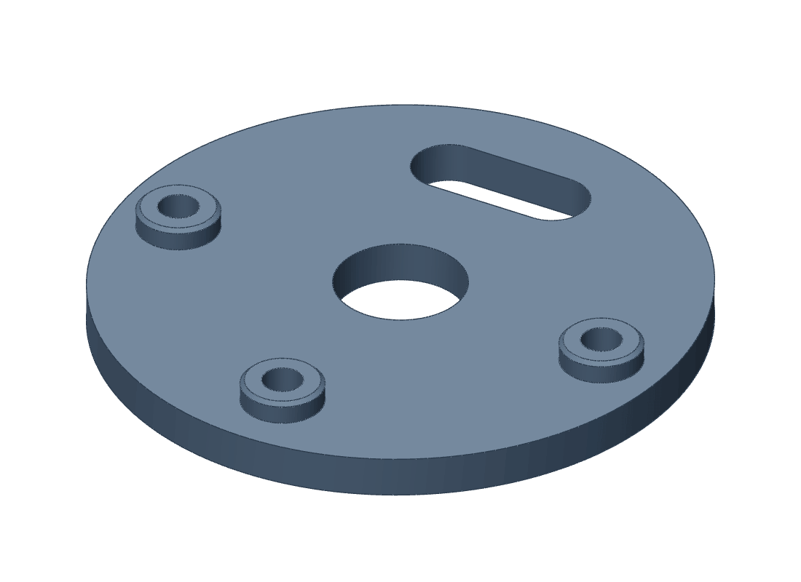

Fits · Pegs and bosses
Never load a peg
across its layers.
Each layer is welded to the one below, and that weld is the weakest thing in a print. A peg standing up off a plate joins it along one such weld. Push the peg sideways and that weld takes the whole load.
Seen in PET-CF first: a faucet plate, May 2026, 0.6 mm nozzle · then PET-GF: a pump base, 2 November 2026, Mark 1Not tried in: a PET-GF peg, broken on purpose
May 2026 · a pegTwo pegs four millimetres across stood on the faucet’s plate to press into its shell. One snapped off on the first try.
June 2026 and since · a pedestal and a screwThe pedestal is short and wide, and nothing pulls on it.
“they still don’t fit, and they snap so easy because of the orientation of the layer lines. This is just not workable.”
The second try made the pegs a tenth of a millimetre slimmer, as loose locating pins with nothing to hold. They snapped again. The fault was the direction of the layers, not the fit.
1a broad pedestal, which only locates2a steel screw, which holds3a brass insert melted into the other part
Which plastic
The pegs were not PET-GF. The faucet was PET-CF that spring and its print log files them with its PET-CF prints. The plate’s own notes that week say “PETG or PET-CF”, and nothing names the spool.
In PET-GF
The photograph is the nearest we have. Derek asked for no change on account of it. The first round of snap caps, printed with their leaves across the layers, is the other case, on the page before.
27.9 of 65.9
MPa. PET-CF across its layers, against along them.
48.2 of 59.9
MPa. PET-GF, the same two figures.
The maker’s own printed test bars, as noted in the faucet’s print log on 24 August 2026, the day the faucet moved to PET-GF.

The plate today · PET-GFThree pedestals, three screws.
What we do now
A feature that will be pushed sideways or pulled is laid so that its roads run through the load, as a snap’s leaves are. Anything that has to stand up off a plate is kept short and broad and is only asked to locate. A screw in a heat-set insert carries the joint.
Still openNobody has broken a PET-GF peg on purpose. By the maker’s figures PET-GF keeps four fifths of its strength across its layers and PET-CF less than half, so the rule may bind less hard here. Nothing in the record tests that.